整除，则它恒包含一个
整除，则它恒包含一个2．抽象群论
第一个要引进并加以探讨的抽象结构便是群。抽象群论的很多基本思想，至少可以回溯到1800年就能或隐或现地找到踪迹。既然抽象理论是存在的，历史学家喜爱的一种活动，便是去追索有多少抽象概念预伏在高斯、阿贝尔、伽罗瓦、柯西，以及成打的其他作者的具体著作中。我们不打算费篇幅去重新考察这段历史。唯一值得提及的有意义的一点是，抽象的观念一经获得，那么对于抽象群论的创始人来说，重温这些过去的著作以得到概念和定理，是相对地容易的。
在考察抽象群概念的发展之前，可以指出过去人们是朝着什么方向努力的。今天通常用的群的一个抽象定义是：一些元素（个数有限或无限）组成的集合，和一种运算，当对集合中任两元素施行这个运算时，所得结果仍然是这集合中的一个元素（封闭性）。这个运算是结合的；集合中存在一个元素，设为e，使得对于这集合中任何一个元素a恒有ae＝ea＝a；而且对集合中每一元素a，存在一个逆元素a′，使得aa′＝a′a＝e。若这运算是交换的，这个群就叫交换群或阿贝尔群，这时这个运算叫做加法，用“＋”表示。这时元素e记作0，叫做零元素。如果这运算是不交换的，则叫做乘法，并把元素e记作1，叫做单位元素。
抽象群的概念及其性质是逐渐地揭示出来的。我们可以回忆一下（第31章第6节），凯莱曾经在1849年提出过抽象群，但这个概念的价值当时没有被认识到。远远超越时代的戴德金(1)在1858年给有限群下了一个抽象的定义，这个群是他从置换群引导出来的。他又在1877年(2)注意到，他的代数数模（即对模中任两元素
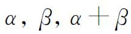
与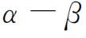
仍属于这个模）可以推广到元素并不限于代数数而且运算可以普遍化，但必须要求每一元素有一个逆元素，并且这运算是可交换的。这样他就提出了一个抽象的有限交换群。戴德金对抽象的价值的了解是值得注意的。他在他的代数数理论的著作中清楚地看到了理想（ideal）和域（field）这种结构的价值。他是抽象代数的卓有成效的创始人。克罗内克(3)从库默尔的理想数的工作出发，也给了一个相当于有限阿贝尔群的抽象定义，类似于凯莱在1849年的概念。他规定了抽象的元素、抽象的运算，它的封闭性、结合性、交换性，以及每一元素的逆元素的存在和唯一。接着他证明了一些定理。在任一元素θ的各个方幂中，存在一个方幂等于单位元素1。如果ν是使
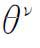
等于单位元素的最小正指数，则对于ν的每个因子μ，就有一个元素φ使得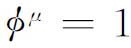
。如果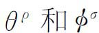
都等于1而ρ和σ分别是使这关系成立的最小正整数，而且它们互素，则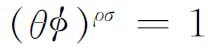
。克罗内克还给出了现在所谓的基定理（basis theorem）的第一个证明。存在由有限多个元素构成的基本组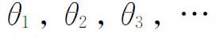
，使得乘积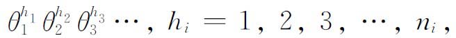
表示群中全部元素，而且表示是唯一的。对应于
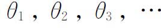
的最小可能值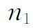
，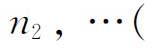
即使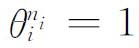
），使得每个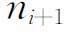
整除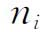
，而且乘积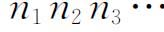
等于群的元素个数n。因而n的全部素因子都在n1中出现。1878年凯莱又写了四篇关于有限抽象群的文章(4)。跟他1849年和1854年的文章一样，在这些文章中他强调，一个群可以看作一个普遍的概念，无须只限于置换群；虽然，他指出，每个有限群可以表示成一个置换群。凯莱的这几篇文章比他早期的文章有更大的影响，因为抽象群比置换群包含更多的东西，这种认识在当时已经成熟了。
弗罗贝尼乌斯和施蒂克贝格（Ludwig Stickelberger，1850—1936）合作的一篇文章(5)把认识又推进了一步，认为抽象群的概念应包含同余，高斯的二次型合成以及伽罗瓦的置换群。他们提到无限群。
虽然内托在他的《置换理论及其对代数的应用》（Substitutionentheorie und ihre Anwendung auf die Algebra，1882）一书中只限于讨论置换群，但他的概念和定理的措词则已认识到概念的抽象性。超出他的前人所得到的结果的总和，内托探讨了同构（isomorphism）和同态（homomorphism）的概念。前者意指两个群之间的一个一一对应，使得如果第一个群的三个元素a，b，c满足a·b＝c，则第二个群中的对应元素a′，b′，c′满足a′·b′＝c′。而同态则是一个多对一的对应，在其中从a·b＝c仍可推出a′·b′＝c′。
到了1880年间，关于群的新概念引起了人们的注意。在若尔当关于置换群的著作的影响下，克莱因在他的埃尔兰根纲领（第38章第5节）中指出，无限的变换群，即具有无限多个元素的群，可以用来对几何进行分类。而且这些群在如下意义下是连续的，即任意小的变换包含在任何群中，或者换句话说，变换中出现的参数可以取任何实数值。例如，在表示绕轴旋轴的变换群中，旋转角θ可以取一切实数值。克莱因和庞加莱在他们的自守函数工作中曾经用到其他类型的无限群，即离散群或不连续群（第29章第6节）。
1870年左右，曾经同克莱因工作过的李着手研究连续变换群的概念，不过不是为了几何分类而是为了其他目的。他观察到用较老方法可积分出来的常微分方程，其大多数在某些类型的连续变换群下是不变的。因而他想到用它能够阐明微分方程的解，并将它们分类。
1874年李引进了他的变换群的一般理论(6)。这样的一个群可表示成如下形式：
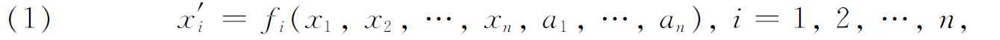
其中
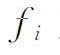
对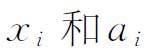
都是解析的。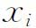
是变量而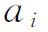
是参量，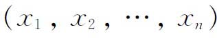
表示n维空间中的一点。变量和参量都取实数值或复数值。例如在一维的情况，下面这样一类变换就是一个连续群：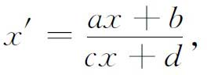
其中a，b，c，d取实数值。用（1）表示的群叫做有限的，这里有限一词是指参数的个数有限。变换的个数当然是无限的。一维的情形是一个三参数变换群，因为变换仅仅和a，b，c对d的比值有关。在一般情形，变换
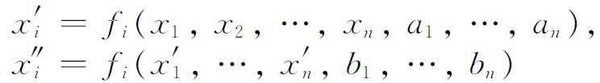
的乘积是
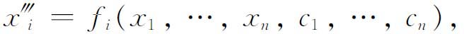
其中
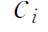
是诸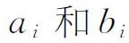
的函数。对一个变量的情形，李把它叫做单扩充流形；对于n个变量的情形，他把它叫做任意扩充流形。1883年，李在另一篇关于连续群的文章中也引进了无限连续群，这篇文章发表在一个没有名气的挪威杂志上(7)。这种群不是由形如（1）的一组方程而是借助一组微分方程来定义的。所得的变换并不依赖于有限多个连续的参量，而是依赖于任意的函数。没有抽象群概念和这些无限连续群相当，因而，对它虽有大量的著作，我们这里就不去讨论了。
考察一下下面的事实也许是有益的。克莱因和李在他们初期的工作中，定义一个变换群为只具有封闭性的群。至于其他性质，如每个元素的逆元素的存在性，则可以根据变换的性质建立起来；或者，如像结合律的情形，则作为变换的一条自明的性质来使用。李在他的工作过程中认识到，每个元素的逆元素的存在性应该作为一条公设放在群的定义中。
到了1880年间，已经知道有四种主要类型的群。它们是有限阶不连续群（置换群是其典型例子）、无限不连续（或离散）群（如在自守函数理论中出现的群）、有限连续李群（克莱因的变换群以及更一般的解析变换李群是其典型例子）、由微分方程定义的无限连续李群。
群论的三个主要来源——方程式论、数论和无限变换群——由于迪克（Walther von Dyck，1856—1934）的工作而都被纳入抽象群概念之中。迪克受凯莱的影响，是克莱因的学生。在1882年和1883年(8)他发表了关于抽象群的文章，其中包含离散群和连续群。他的群的定义是：一个由元素组成的集合，一种满足封闭性的运算，结合律成立但不要求交换性，每个元素存在一个逆元素。
迪克很明确地运用了一个群的生成元（generator）这一概念，这在克罗内克的基定理中是隐晦的，而在内托关于置换群的著作中是明显的。生成元指的是群的一个固定子集，它们是独立的，使得群中每个元素可以表示成这些生成元和它们的逆的方幂的乘积。当生成元之间没有任何约束时，这个群就叫做一个自由群。如果A1，A2，…是一组生成元，则表达式
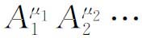
叫做一个字（word），其中μi为正或负整数。在生成元之间可以存在一些关系，这种关系可以取如下的形式：
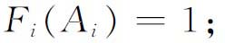
就是说，一个字或字的组合等于群的单位元素。迪克接着指出，关系的出现意味着该自由群G的一个不变子群和一个商群
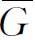
。在他1883年的文章中，他把抽象群理论应用于置换群、有限旋转群（多面体的对称）、数论中出现的群以及变换群。一个抽象群的独立公理系统由亨廷顿(9)、穆尔(10)、迪克森（Leonard E．Dickson，1874—1954）(11)给出过。这几种以及其他公理系统相互间的差别并不大。
在完成群的抽象概念之后，数学家们转到求证抽象群的一些定理，他们都是从具体情形的已知结果中启发得来的。例如弗罗贝尼乌斯(12)证明了关于有限抽象群的西罗定理（第31章第6节）。有限群的阶是指它包含的元素的个数，如果一个有限群的阶能被一个素数p的方幂整除，则它恒包含一个
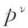
阶子群。除了寻找一些具体群，其性质对于抽象群可能成立以外，许多人给抽象群直接引进新概念。戴德金(13)和米勒（George A．Miller，1863—1951）(14)探讨了非阿贝尔群，其中每个子群都是正规（不变）子群。戴德金在他1897年的文章中和米勒(15)都引进了换位子（commutator）和换位子群的概念。如果
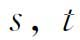
是群G的任何两个元素，则称元素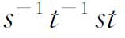
为s和t的换位子。戴德金和米勒两人用这个概念证明了一些定理。例如，群G的元素对（有序的）全体的所有换位子集合生成G的一个不变子群。一个群的自同构是指群的元素到它们自身的一一对应，使得如果ab＝c，则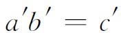
。赫尔德(16)和穆尔(17)在一组抽象的基上研究了群的自同构。抽象群理论的进一步发展在许多方向继续进行。其中之一是由赫尔德从置换群继承过来的，写在他的1893年的文章中，问题是找出具有给定阶的群的全体。这个问题凯莱在他的1878年的文章中(18)也曾提到过。这个问题一般还解决不了，因而只研究了一些特殊的阶，如
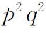
阶，其中p，q都是素数。与它相关的一个问题是，各种次数的非传递群、本原群和非本原群的次数问题（一个置换群的次数是指置换群中文字的个数）。另一研究方向是，确定复合群或可解群和单群（单群是指这样的群，它除单位群和自身外没有其他不变子群）。这个问题当然是来自伽罗瓦理论。赫尔德在引进因子群(19)的抽象概念之后，讨论了单群(20)和复合群(21)。其结果中有一个素数阶循环群是单群，n个（n≥5）文字的全部偶置换组成的交代群是单群。还发现了许多其他有限的单群。
至于可解群，弗罗贝尼乌斯有几篇文章研究这问题。例如(22)，他发现，阶不能被一个素数的平方整除的群全都是可解的(23)。研究何种群是可解的，这是确定一个已知群的结构这种更广泛的问题的一部分。
迪克在他1882年和1883年的文章中引进了用生成元和生成元之间的关系去定义一个群的抽象观点。假设一个已知群是用有限多个生成元和关系来定义的，按照德恩(24)的说法，恒等或字的问题是，确定任何一个“字”或元素的乘积是否等于单位元素。可以给定任何一组关系，因为至少只有一个单位元素的平凡群就满足这组关系。要确定一个由生成元和关系给出的群是不是一个平凡群，这个问题本身却是不平凡的。事实上还没有一个有效的方法。当这种关系仅由一个定义关系组成时，威廉·马格努斯（Wilhelm Magnus，1907—1990）证明了字的问题是可解的(25)。但是一般问题却是不可解的(26)。
普通群论中另一个尚未解决的著名问题是伯恩赛德问题。任何有限群有这样的性质，即它是有限生成的而且每一个元素是有限阶的。1902年(27)伯恩赛德（William Burnside，1852—1927）问道，是否逆定理成立；就是说，如果一个群G是有限生成而且每一个元素是有限阶的，G就是有限的吗？这个问题曾经引起许多人的注意，而获得解决的却仅仅是它的一些特殊情形。还有另一个问题，即同构问题，是要确定两个由生成元和关系定义的群何时同构。
群论中的惊人转变之一是在群的抽象理论开创之后不久，数学家为了获得抽象群的某些结果，转而借助更具体的代数来表示群。凯莱在他1854年的文章中指出，任何有限抽象群能够用一个置换群来表示。我们也已经提到过（第31章第6节），若尔当在1878年引进了置换群的线性变换表示。这些变换或它们的矩阵，业已证明是抽象群的最有效的表示法，这种表示叫做线性表示。
一个群G的矩阵表示，是G的元素g到一组固定阶的非奇异方阵A（g）的一个同态映射，其中矩阵的元素是复数。这个同态意味着
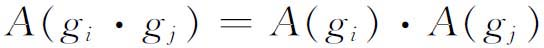
对于G的所有元素
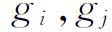
成立。一个群有许多矩阵表示，因为矩阵的阶（行数或列数）可以变更，并且即使对于一个给定的阶，对应关系也可以变更。我们还可以把两个表示加起来。如果对于G的每一个元素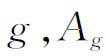
是一个n阶表示的对应矩阵而Bg是另一个n阶表示的对应矩阵，则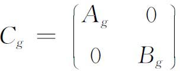
就是G的第三个表示，它叫做上述两个表示的和。同样，如果
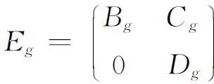
是一个表示，而且对于每一个
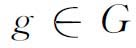
来说，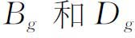
分别为m阶和n阶非奇异矩阵，那么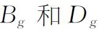
也是G的表示，阶比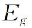
的低。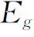
叫做分级表示。分级表示以及与一个分级表示等价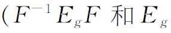
叫做等价的，其中F是与Eg同阶的非奇异矩阵而且与g无关）的表示叫做可约的。一个不与任何分级表示等价的表示叫做不可约的。由n个变量的一组线性变换组成的不可约表示其基本含义是，它是一个同态的或同构的表示而且不存在数目少于n的m个线性函数（是给定的n个变量的线性函数）使得在上述不可约表示中的每个线性变换下，这m个线性函数的每一个仍然变成这m个线性函数的线性组合。一个表示，如果它等价于一些不可约表示的和，则叫做完全可约的。每一个有限群有一个特别的表示叫做正则表示。假设群的元素用脚标记作
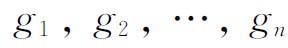
。设a是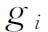
的任一个。我们考虑由a确定一个n×n矩阵如下。设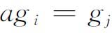
。于是在这个矩阵的（i，j）位置上放一个1，对i＝1，2，…，n和固定的a都这样做，然后在其他位置都放上0。这样就得到一个由a确定的矩阵。于是对于群的每一个元素g都有这样一个矩阵与它对应，这些矩阵组成的集合就叫做这群的一个左正则表示。同样作右乘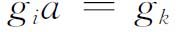
，我们得到一个右正则表示。重排群的元素g，就得到其他正则表示。正则表示的概念是由查尔斯·皮尔斯（Charles Sanders Peirce）于1879年引进的(28)。把置换群用形如
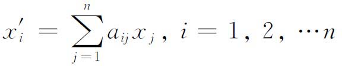
的线性变换来表示，是由若尔当首创的，后来在19世纪末和20世纪初由弗罗贝尼乌斯、伯恩赛德、莫利恩（Theodor Molien，1861—1941）和伊塞·舒尔（Issai Schur，1875—1941）推广到一切有限抽象群的表示的研究。弗罗贝尼乌斯(29)对有限群引进了可约和完全可约表示的概念，而且证明了一个正则表示包含所有不可约表示。他在1897年到1910年间发表的其他文章中（有些与伊塞·舒尔的工作相联系）还证明了许多其他的结果，其中有仅存在少数几个不可约表示，其他所有表示都是由它们组合成的。
伯恩赛德(30)给出了另一个主要结果，即要一个群可约，n个变量的线性变换群的系数所应满足的一个必要充分条件。由线性变换组成的任何有限群是完全可约的，这个事实首先由马施克（Heinrich Maschke，1853—1908）证明(31)。有限群的表示理论已经引出了抽象群的一系列重要定理。在本世纪的第二个四分之一里，表示理论已经推广到连续群，但是这方面的发展不准备在这里讲。
群特征标（group character）的概念有助于群表示的研究。这个概念可以回溯到高斯、狄利克雷和海因里希·韦伯（注(35)）的工作。戴德金在狄利克雷的著作《数论讲义》（Vorlesungen über Zahlentheorie，1879）第三版上对阿贝尔群的特征标作了一般的描述。一个群G的特征标是一个定义在群G的所有元素s上的函数χ（s），函数值处处不为0，并且。两个特征标是互不相同的，如果至少对群的一个s有。
这个概念由弗罗贝尼乌斯推广到一切有限群。开始的定义叙述颇为复杂(32)，他后来给了一个较简单的定义(33)，成为现在的标准形式。特征标函数是群的一个不可约表示的矩阵的迹（即主对角线上元素的和）。这一概念后来由弗罗贝尼乌斯和其他人应用到无限群上。
特别地，群特征标可用来确定一个已知的有限群能够用线性变换群来表示所需要的变量的最小数目。对于交换群来说，群特征标还可以确定全部子群。
显示出对时尚的通常的热忱，19世纪末20世纪初的许多数学家都以为，全部值得纪念的数学终究将会包括在群论之内。特别是克莱因，他虽然不喜欢抽象群论的形式主义，却偏爱群这个概念，因为他认为群会把数学统一起来。庞加莱是同样的热情。他曾说过(34)：“……可以说，群论就是那摒弃其内容而化为纯粹形式的整个数学。”